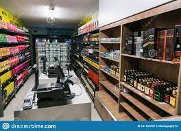
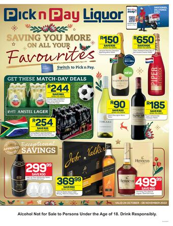

PICK'N PAY LIQUOR STORE
 Pick n Pay has launched its new PnP Groceries section on Takealot’s Mr D platform. The companies announced a partnership in May 2022.
Using the Mr D app, shoppers will have access to over 10,000 food and grocery products – featuring the same in-store prices – with Smart Shopper points and eBucks integrated into the system.
The new service is currently being piloted in selected areas in Cape Town and Johannesburg and will expand to 300 stores nationwide by December 2022, Pick n Pay said, extending to all areas Mr D currently covers, as well as some new ones.
How the service will work:
Shoppers will have access to items and products available at their local Pick n Pay stores. Orders will be picked in-store by Pick n Pay staff. The orders will be delivered by Takealot’s delivery fleet. Shoppers will be able to earn Smart Shopper points through the purchases. Pick n Pay’s PnP Groceries will be competing directly with Shoprite Group’s hugely successful Checkers Sixty60 delivery platform and Woolworths’ Woolies Dash platform, which is in the process of being integrated into the wider Woolworth digital space. Both companies are developing and expanding their systems to cater to the growing demand for same-day grocery deliveries. While Pick n Pay said it has seen strong sales growth through its own on-demand service, Asap, there is room to capture more of the market. The Mr D service reaches 2.5 million active customers in South Africa. “The demand for online grocery shopping has grown rapidly, and there is huge potential for further growth. By working alongside the Takealot Group and Mr D, we will give customers the best and most reliable on-demand offer in South Africa,” said Vincent Viviers, Executive Co-Head of Omnichannel at Pick n Pay